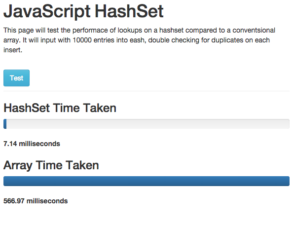

JS HashSet. A free, highly optimized hashSet class for js and Node.js
JS HashSet is a rapidly searchable implementation of HashSets for Javascript development. It items in a HashSet can be searched for values rapidly, even when the hashsets grows to a massive size. This gives a major performance improvement over traditional Array.inexOf lookups on large datasets.
A HashSet is like an array, in that it holds multiple values / objects. It stores these values such that it is very easy and fast determine whether an value is existent in the set already.
Hashsets are popular in dotNet and Java applications as a very fast way for looking up (searching)the existance of a value in a dynamic data set.
A weakness of Hashsets is that they are unordered, and in some langauges can not be enumerated. This weakness is overcome in JavaScript Hashset" with a enumerate function and also a copyToArray function.
JS HashSet is used within the Search Turbine Enterprise Search technology for Node.Js. It aids performance of the javascript search algorithms by keeping value lookup time stable, even on massive data sets.
When To Use A HashSet?
HashSets excel when you are consistent (iterative) checking an array for the existence of an item. By replacing the array with a hahsset, search performance can be rapidly reduced. The larger the data set, the bigger the improvement.
Compatability
Close to universal JS compatability on modern platforms.
- Internet Explorer 5-11
- Node.JS
- Google Chrome
- FireFox
- Safari
- Opera
- Konqueror
Performance
JS HashSets has been tested for datasets from 1-100000 items compared to a normal linear js array.
- Even for a dataset of 1 item, hashset is up to 2x faster.
- For dataSets of 100,000 items, hashset is up to 500x faster.


Download
JS HashSet is open source software with a permissive BSD license. You can use it in both free and commercial project for free, and can modify and update the code in agreement with the simple, plain english license terms. Download JS HashSet.